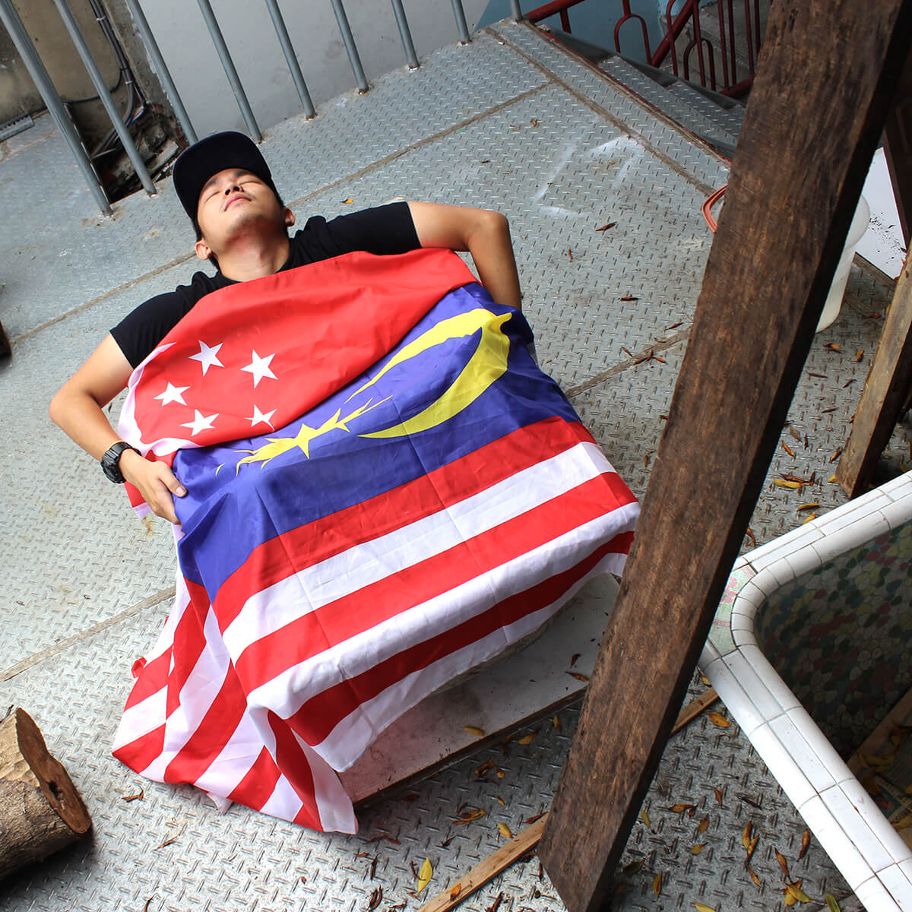
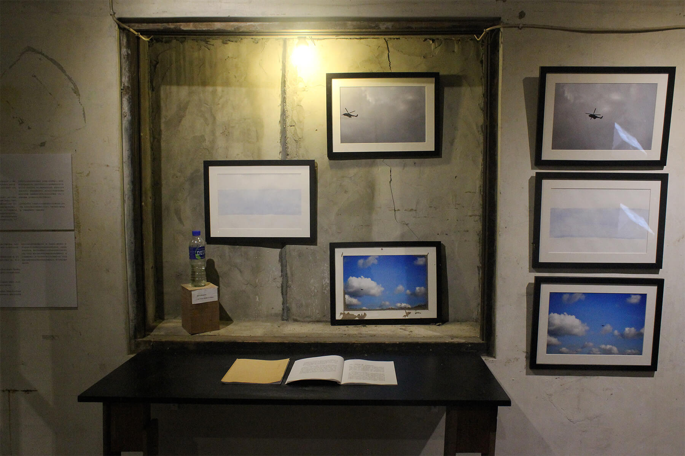
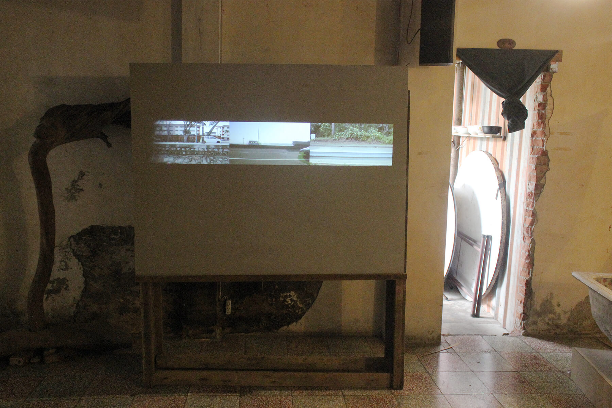
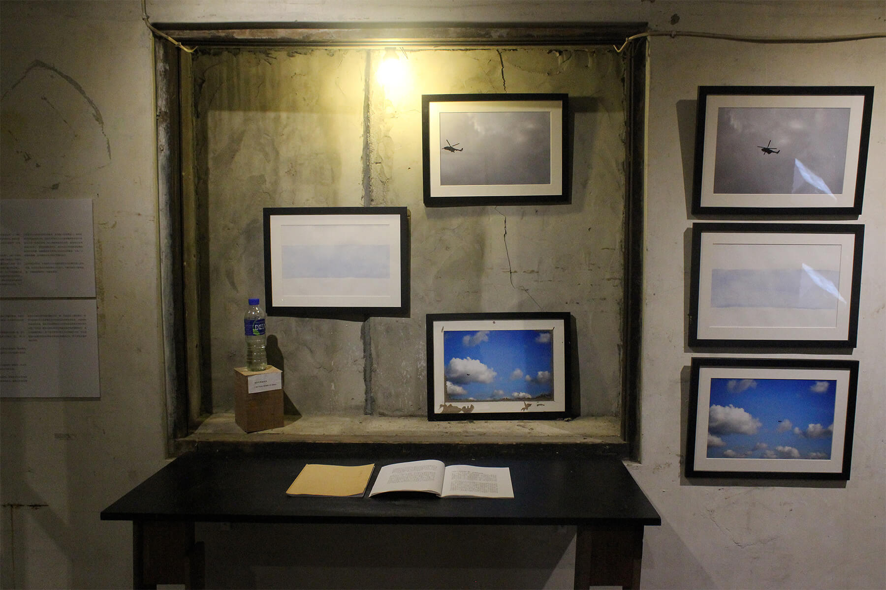
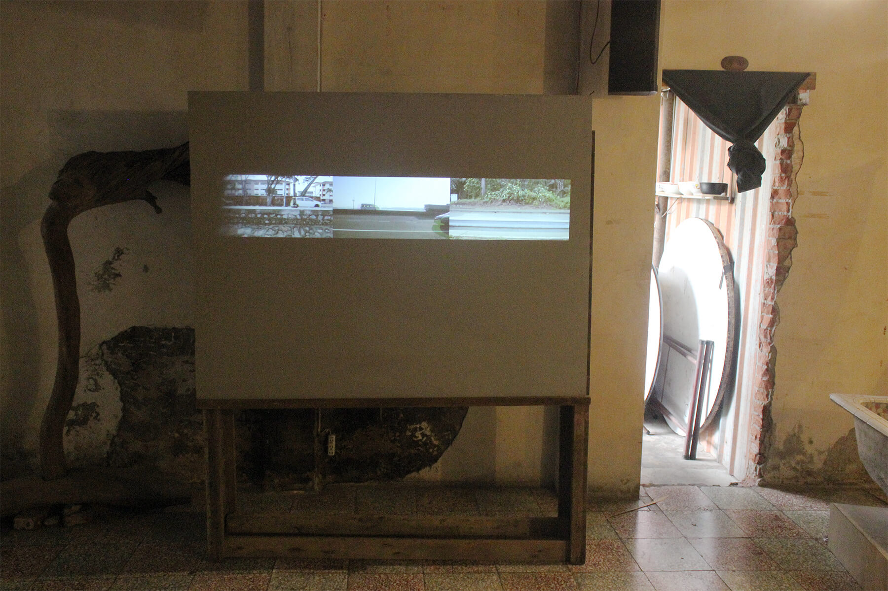
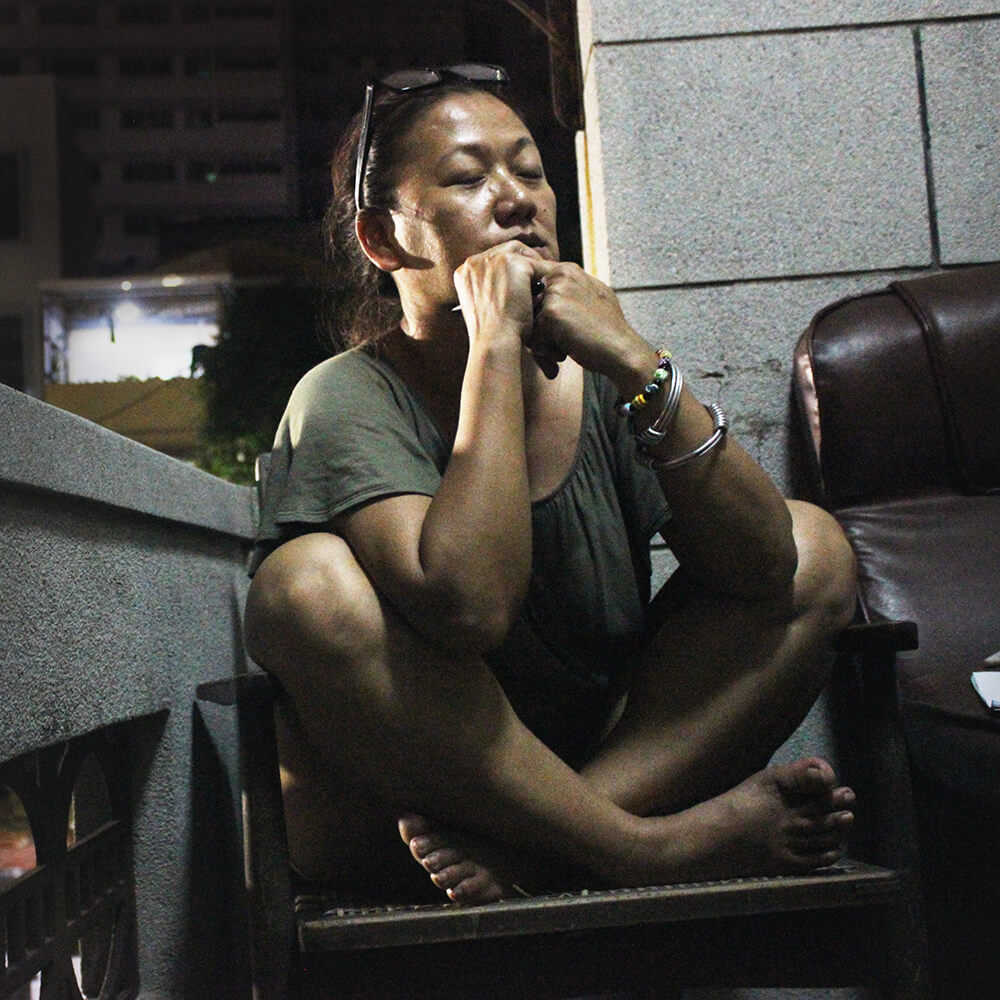
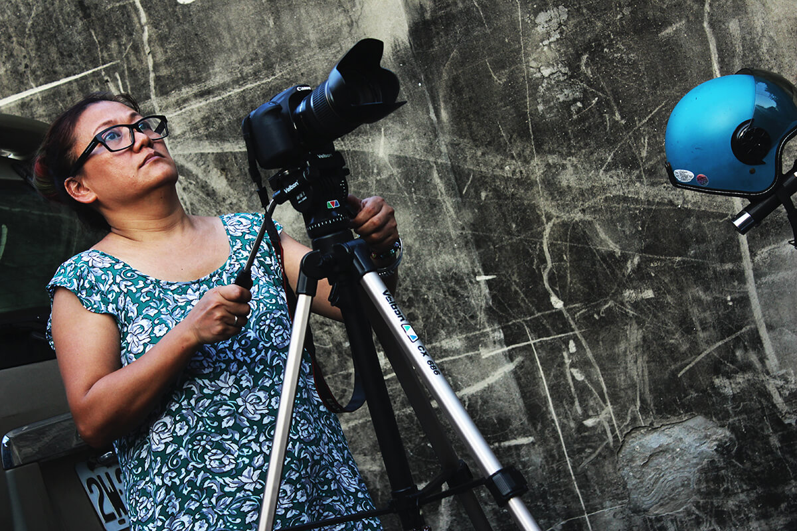
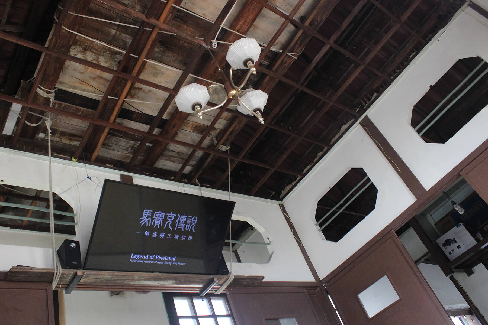

rahil
Artist│Hew Wai-Yang, Chang En-Man
Curator│Chiu Po-Ting
Term│06/04 ～07/03 Opening│02:00 pm 06/04
Venue│Exhibition Room & Japanese Room, Neng Sheng Xing factory
FB：https://www.facebook.com/events/1048000601956189/
“Alas! Under the foreign night sky covered in citreous”--- N̂g Jìn-liân
Whether a subject’s roving, or calling somewhere else home, he or she will always encounter circumstances differ from what one had in former days. There might be new life ahead, but at other times, previous way of living, traditional value, or certain state of mind, maintained. Is there a promised land for anybody? Could it be, what makes a stranger strange, made us? How could an artist probe or even elaborate the meaning regarding these issues?
May we proudly present to you, the very first exhibition under N-factory artist in residency program---Rahil. This exhibition focuses on life after encountering, which implies two aspects: the endless pursue of meaning on locality and the essence of traveling. The name of this exhibition in Chinese originates from a classic scientific document Kao Gong Ji, on technology and related ritual during the Zhou dynasty. There’s a metaphorical saying of “southern orange became trifoliate after traveling north”, which indicates that a person can never be identical as before after encountering different nature of the other.
Similarly, the word rahil(رحيل) refer to any never-turning-back departure. A sixth century, 68 line Arabic poem written by Al-Shanfara named Lamiyyatu’l Arab articulates this very idea, by telling a story of a man who has left his tribe, solely begun his journey into the desert. His adventure challenged his pride; harsh environment turned him into the form of a boa, some other beasts, and finally, a graceful stag. Inspired by this myth, the robust idea of transference becomes the motive of this exhibition.
As we enter the aesthetic experience, looking closer into art projects produced by two artists: Hew Wai-Yang and Chang En-Man, both of them focus on the restriction and violation of the mechanism of boundary. Modern nations and narratives become subjects of one-way journeys: Hew Wai-Yang, through his creations, projects his emotions towards the straits of Johor which divided Malaysia and Singapore; Chang En-Man, on the other end of the spectrum, cooperates with members of Neng Sheng Xing factory in filmmaking, making shared stories into a no-subject, deterritorialized narrative discourse.
Residents

│Chiu Po-Ting│(Taiwan)
Chiu live and work in Tainan and Taipei as a curator. His production mainly focus on the relationship between art and politics, latest trends of contemporary art as descendant of avant-garde, art critic in psychoanalytic approach, archive in art creations.

│Hew Wai-Yang│(Malaysia)
Paintings, sculptures, installations, for all phenomenons regarding ethnicity, history context of colonial condition in Malaysia, he approaches these issues with his art works.
 

WORKS：I’M FROM STRAIT OF JOHOR

│Chang En-Man│(Taiwan)
Born in Taitung, Taiwan. Lives and works in Taipei.
From the start, identity of the artist inspired her, triggered her to travel across the island. Through the returning visit to the aboriginal tribes, Chang En-Man experienced the social geographical texture of the locale, thus she begin her attempt to discover the complex food chain-like interconnections of the locale in order to portray its cultural landscape. Under the dissolving borders caused by globalization and the mechanisms of ideologies of the dominant cultures, the artist's body shifts and strikes via guerrilla tactics within these physical boundaries in the contemplation of a reality reflected by society, and presents these matters within her artworks as well. Whilst engaging in the mapping of a self spiritual realm. Chang En-Man also attempted to expand the overall figuration of the community in the entire world. Through practice, she explores the possibility of art being the force of transformation.
Website: http:// amaan286.blogspot.tw/

WORKS：Legend of Pixelated - Preliminary research of Neng-Sheng-Xing Factory